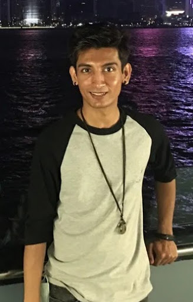

Howdy, I'm Ali
I've never heard of you! Who are you?
That's right. I'm not a celebrity. I do have 7 subscribers on my YouTube channel, tho. Anyway, I'm very passionate about computer science. You can assume I'm examining the beauty of computer science when I'm free. If I had to rank three of my most favourite computer science topics, it would be Artificial Intelligence, Operating System (e.g. Kernel, Desktop Environment, etc), and compilers.
Fair enough. So, do you have any mission? Some sort of life goals?
Yea, I do have life goals. It would be awesome if I get a chance to pursue PhD in AI related studies. I love studying and never feel forced to. Some of my other life goals are to write my own programming language, build my own small lightweight 3D game engine with Vulkan, and build an automated vacuum cleaner with a single-board computer, an interest taken from my Lingnan University's AI professor, Dr. MAHMOUDI Amin. I realise that my goals are huge, but if I take a step by step approach, I have the confident that I'll be able to accomplish them.
Hmm.. How did you get into computer science?
Makes me happy that you're interested in my story. :) My computer science journey started back when I was 15. I was surfing the web and stumbled into crydev.net, a forum that doesn't exist anymore. It is now converted to forum.cryengine.com, if you're interested. It's a website where people discussed developing games with CRYENGINE. No, I'm not shouting. They just prefer capital letters. (used to be "CryEngine" back then) Anyway, in order to create video games with CRYENGINE, I had to learn programming, a knowledge I didn't had. I quickly posted on the forum asking to guide me. Luckily, the respondents were kind enough to show me the path to hilltop. Following their advice, I went to the nearby public library to find a C++ book but failed miserably. The library was too small and only held story books. Fortunately, my coconut sized brain figured Golden Computer Centre may have one. I went with my mother and found only 1 bookstore in the whole centre but it didn't matter as luckily, that one store had ONE used English copy of Sams Teach Yourself C++ in One Hour a Day. I was happy like toads are when it's raining.
So, when I was back home, I booted up my computer and read the first chapter. It gave me a brief history of C++ and that was when I first started to get fascinated about computer science. Hell, I didn't even knew it was called computer science at the time. It told me to install Microsoft Visual C++ and run the given Hello World program. Such a simple program, yet I failed but I'm glad. Confused? Well, the error wasn't related to my code, it was related to the compiler not being setup properly. Now, I don't remember what was the error but I remember taking weeks to figure out the problem which taught me so much about compilers in general. I also learnt to use Google search engine efficiently. I started searching about AI, a childhood dream I had from movies and it was this moment I had my first life goal. It was to study computer science at Carnegie Mellon University.
Fascinating. How old are you?
I'm 23.
WHAT? When are you finishing college?!
Actually, I started my college journey this year. I know that it's rather late. Especially for someone this invested into a discipline. To make a really long story short, in secondary school, I became part of a group that didn't enjoy studying. I got inspired by them and sort of became them. I dropped out before completing. I was young and stupid. In a year without them, I realised how I wasn't the sharpest tool in the shed. I joined VTC's Youth College programme called Diploma in Vocational Education (IT) and gradually got into VTC's IVE programme called Higher Diploma in Data Science and Analytics. Both VTC's programmes were taughted in full Cantonese. My secondary school was an English school but I managed it pretty well. Today I'm a data science bachelor at Lingnan University. I didn't manage to get into Carnegie Mellon University to study computer science due to my bad history. Can't say I'm surprised but like the saying goes, if I had a magic wand, I would start my life all over again. It also sort of makes me wonder how many people have ruined their life and never got a second chance.
https://github.com/Ali-Lord
https://www.linkedin.com/in/ali-raz/
http://AzadiFood.hk